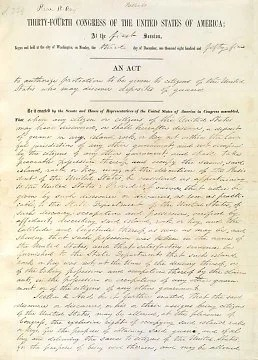

Media

The Chinese Exclusion Act of 1882 was the first U.S. law to forbid immigration from a specific nationality, closing off Chinese immigration for 10 years and preventing those already in America from obtaining U.S. citizenship. This act highlights the struggle for the civil rights of Chinese immigrants and the government's failure to uphold its responsibility in ensuring the protection of their civil rights, especially under the recently ratified 14th Amendment, which promised equal protection to all people on U.S. soil. The Chinese Exclusion Act created a lasting impact on racism, discrimination, and future immigration policies.